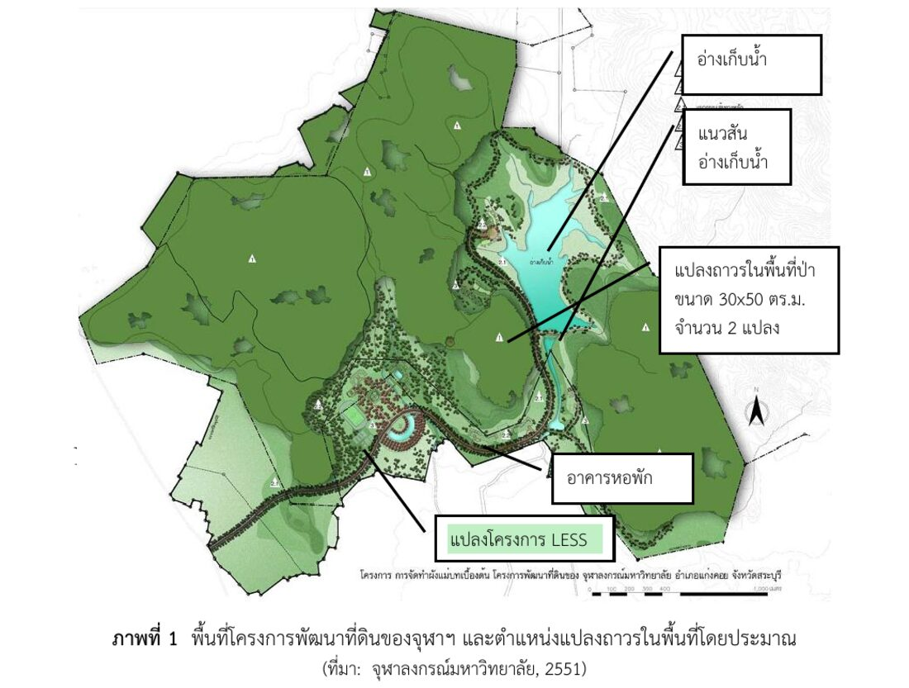
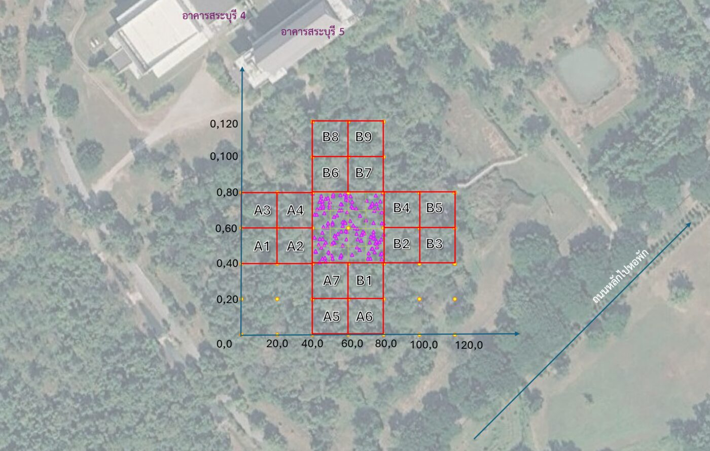
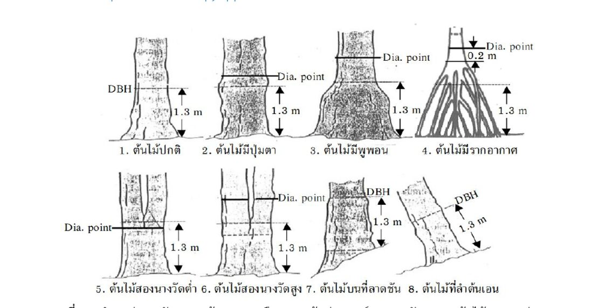
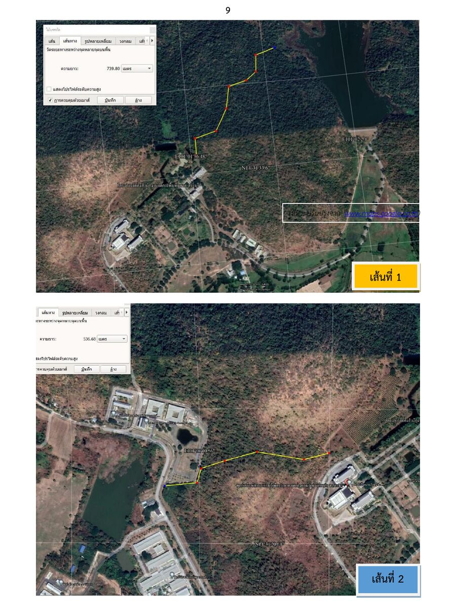

ภาพรวมของปฏิบัติการ
การศึกษาทางนิเวศวิทยาหลายเรื่องต้องติดตามข้อมูลในพื้นที่เดิมเป็นเวลาหลายปีหรือหลายทศวรรษ เช่น การเพิ่มพูนมวลชีวภาพของป่า การหมุนเวียนธาตุอาหาร หรือการเปลี่ยนแปลงแทนที่หลังการรบกวน จึงมีการสร้างแปลงถาวร (permanent plot) ไว้ศึกษาระยะยาว ภาควิชาชีววิทยามีแปลงถาวร 2 แห่ง คือ ที่สถานีถ่ายทอดความรู้สู่ชุมชน ต.ไหล่น่าน อ.เวียงสา จ.น่าน (40 × 40 ม. 4 แปลง) และที่จุฬาฯ สระบุรี ซึ่งใช้ในปฏิบัติการครั้งนี้
สังคมพืชในแปลงถาวร
Quadrat sampling ต้นไม้และไม้หนุ่ม/ไม้พุ่ม ปัจจัยกายภาพ เศษซาก และสัตว์ในดิน แล้ววิเคราะห์ค่าดัชนีความสำคัญ ความหลากหลาย และคาร์บอนเหนือพื้นดิน
เส้นทางศึกษาธรรมชาติ
สำรวจแบบ belt transect 2 เส้นทาง บันทึกโครงสร้างและหน้าที่ของระบบนิเวศด้วย iNaturalist เพื่อเตรียมข้อมูลพัฒนาเป็นพื้นที่ OECMs
นำเสนอและรายงาน
นำเสนอหน้าชั้นเรียน ส่งวิดีโอ ภาพถ่าย และรายงานฉบับสมบูรณ์ทาง MCV
วัตถุประสงค์ เมื่อจบปฏิบัติการ นิสิตสามารถ
- วิเคราะห์สังคมพืชในพื้นที่ป่าผลัดใบรุ่นสองโดยใช้วิธี quadrat sampling ได้
- อธิบายความสัมพันธ์ระหว่างปัจจัยต่าง ๆ ในระบบนิเวศที่ศึกษา และประเมินสถานภาพของระบบนิเวศเบื้องต้นได้
- เขียนรายงานทางวิชาการที่อภิปรายเปรียบเทียบกับการศึกษาในพื้นที่อื่น ๆ ได้
พื้นที่ศึกษาและตำแหน่งแปลง
โครงการพัฒนาที่ดินของจุฬาลงกรณ์มหาวิทยาลัยเริ่มในปี พ.ศ. 2532 ปัจจุบันมีพื้นที่ 3,364 ไร่ แบ่งเป็นเขตพัฒนาและเขตอนุรักษ์ แปลงถาวรตั้งอยู่ติดหมู่บ้านชำผักแพว มีสภาพเป็นป่าผลัดใบ
ก่อนปี 2535 พื้นที่ถูกแผ้วถางและเผาเพื่อปลูกข้าวโพดบนไหล่เขาและมันสำปะหลังบริเวณที่ราบเชิงเขา หลังกรมป่าไม้กำหนดแนวเขตป่าอนุรักษ์ในปี 2535 พื้นที่ถูกปล่อยให้ฟื้นตัวตามธรรมชาติ (secondary succession) มากว่า 20 ปี ชาวบ้านยังเก็บของป่า เช่น เห็ดและหน่อไม้
การถาง เผา และไถพรวนในอดีตเปลี่ยนคุณสมบัติดินทั้งทางกายภาพและเคมี สิ่งมีชีวิตที่ปรับตัวได้จึงเข้ามาครอบครองพื้นที่ ส่งผลต่อชนิดพันธุ์เด่นและความหนาแน่นของสังคมพืชในปัจจุบัน

แปลงย่อยของแต่ละกลุ่ม (20 × 20 ม.)
แตะแปลงเพื่อดูพิกัดมุมล่างซ้าย (x₀, y₀) ใช้บวกกับพิกัดต้นไม้ในแปลงของกลุ่ม เมื่อรวมข้อมูลทุกกลุ่มจะเห็นการกระจายของต้นไม้ทั้งแปลง แกน x ชี้ไปทางทิศตะวันออกโดยประมาณ ตามภาพที่ 2 ในเอกสารปฏิบัติการ
พิกัดรวมของต้นไม้: 87.5, 72.0

อุปกรณ์และการเตรียมตัว
ติ๊กรายการเพื่อตรวจของก่อนขึ้นรถบัส ระบบจำสถานะไว้ในเบราว์เซอร์เครื่องนี้เท่านั้น
เอกสารประจำกลุ่ม
นิสิตเตรียมเอง
อุปกรณ์ส่วนกลาง (ต่อกลุ่ม)
นิสิตจัดลงกล่องเอง TA ตรวจอีกครั้ง
ของใช้ส่วนตัว
เตรียมไปเอง
การศึกษาสังคมพืชในแปลงถาวร
แปลงถาวรขนาดใหญ่ไม่สามารถนับได้ทั้งหมด (total count) ด้วยข้อจำกัดของกำลังคน เวลา และงบประมาณ จึงแบ่งเป็นแปลงย่อย 20 × 20 ม. แล้วสุ่มให้แต่ละกลุ่มศึกษา quadrat อาจเป็นวงกลมหรือสี่เหลี่ยมขนาดต่าง ๆ เช่น 1×1, 4×4, 10×10, 20×50 หรือ 100×100 ม. ขึ้นกับวัตถุประสงค์
ลำดับการทำงานในแปลง
แบ่งกลุ่มและรับแปลง
แบ่งเป็น 2 กลุ่มใหญ่ตามวันปฏิบัติการ (อังคาร/พฤหัสบดี) กลุ่มย่อยรับ quadrat ขนาด 20 × 20 ม. ตามภาพที่ 2 หรือตามที่กำหนดในภาคสนาม
บันทึกปัจจัยทางกายภาพ ภาคผนวก 2
- อุณหภูมิ อากาศ ผิวดิน และใต้ดิน (ขุดด้วยพลั่วก่อน) ทุก 30 นาทีตลอดปฏิบัติการ
- ความชื้นดิน เก็บดิน 50–100 ก. ชั่งน้ำหนักสด อบ 105 °C 24 ชม. แล้วชั่งน้ำหนักแห้ง
- ความชื้นสัมพัทธ์ ด้วย hygrometer ทุก 30 นาที
- pH ดิน ด้วย pH paper และน้ำกลั่น
- สีดิน ฝึกใช้ Munsell Soil Color Charts ออนไลน์
- สภาพกายภาพ หินก้อนใหญ่ จอมปลวก ความลาดเอียง
- ความสูงจากระดับน้ำทะเล ด้วยแอป GPS Essentials หรือ AndroidTS GPS Test
ขึงเชือกกำหนด quadrat
ใช้เชือกฟางกำหนด 20 × 20 ม. จากมุมแปลงถาวร ให้มุมล่างซ้าย (ทิศตะวันตกเฉียงใต้) เป็นจุด (0,0) แล้วขึงแบ่งเป็น quadrat ย่อย 10 × 10 ม. 4 ช่อง เชือกทำเครื่องหมายทุก 1 ม. ปลายเชือกเริ่มที่ 0
จำแนกกลุ่มพันธุ์ไม้
กลุ่ม DBH CBH เทียบเท่า ความสูง ติด tag Tree ≥ 4.5 ซม. ≥ 14.1 ซม. ≥ 1.3 ม. ติด Sapling/shrub < 4.5 ซม. < 14.1 ซม. ≥ 1.3 ม. ไม่ต้องติด ใช้ DBH 4.5 ซม. เป็นเกณฑ์ เพราะไม้ขนาดนี้มักรอดจากไฟป่าได้ (ธิติ และคณะ, 2542) และต้องการประเมินคาร์บอนในมวลชีวภาพเหนือพื้นดิน
เก็บข้อมูล Tree ใน plot 10 × 10 ม.
- ตอกป้ายหมายเลข (tag) เฉพาะ Tree
- บันทึกชื่อต้นไม้ ถ้าไม่ทราบให้เก็บใบ 2–3 ใบและดอกใส่ถุง และ/หรือถ่ายภาพ เพื่อตรวจชื่อภายหลัง
- บันทึกตำแหน่ง X, Y ของทุกต้นลงกระดาษกราฟ
- วัดเส้นรอบวงที่ระดับ 130 ซม. (ซม.) ต้นที่แตกหลายลำจากตอเก่า (เรียกว่า "นาง") ให้วัดทุกนาง เรียงจากใหญ่ไปเล็ก และวัด/ประมาณความสูงทุกนาง (ม.)
เก็บข้อมูล Sapling/shrub
ใน quadrat 10 × 10 ม. บันทึกชื่อ ตำแหน่ง CBH และความสูงเช่นเดียวกับ Tree
ไผ่
วัด DBH ทุกลำใน 1 กอ ถ้าเกิน 200 ลำให้สุ่มวัด 20 ลำ (เกณฑ์ LESS ใช้ 20 ลำ ดูหัวข้อ 08)
เศษซาก (litter)
สุ่ม quadrat 1 × 1 ม. 4 จุด หรือกำหนดเป็นระบบที่มุมของ quadrat เก็บ litter ใส่ถุง ชั่งน้ำหนักสดทันที แบ่งราว 100 ก. ไปอบหาน้ำหนักแห้ง
การปกคลุมของเรือนยอด
ใช้แอป Canopeo หรือ CanopyApp ถ่ายภาพเรือนยอดในแปลง
สัตว์ในดิน (soil fauna)
- สุ่ม quadrat 1 × 1 ม. 1 จุด ใช้พลั่วมือคุ้ยใบไม้และดินหา macro-soil fauna บันทึกชนิด จำนวน น้ำหนัก ถ่ายภาพ แล้วปล่อยคืนที่เดิม
- สุ่ม quadrat 20 × 20 ซม. ตักดินลึก 5 ซม. ใส่ถุง (อย่ามัดแน่น) นำไปสกัด meso-soil fauna ด้วย Tullgren funnel

ข้อควรระวังในการวัด
- วัดที่ 1.3 ม. จากพื้นด้านที่สูงกว่าเมื่อต้นไม้อยู่บนลาดเขา
- ต้นมีพูพอนหรือรากค้ำ ให้วัดเหนือพูพอนขึ้นไปในตำแหน่งที่ลำต้นสม่ำเสมอ
- ต้นแตกนางต่ำกว่า 1.3 ม. วัดทุกนางแยกกัน
- ดึงสายวัดให้ตั้งฉากกับลำต้นและแนบเปลือก
- ต้นไม้ที่ตายแล้วให้ระบุในตารางบันทึกด้วย
แปลงค่า: DBH = CBH ÷ π (เอกสาร LESS ใช้ π ≈ 22/7)
เครื่องมือภาคสนาม
Munsell Soil Color Charts
ระบุสีดินเป็น Hue Value/Chroma เช่น 10YR 4/3 บันทึกทั้งสภาพชื้นและแห้ง เทียบกลางแสงธรรมชาติ ชาร์ตออนไลน์มี 9 หน้า (10R–5Y, Gley 1–2) และเทียบสีจากรูปถ่ายได้
GPS Essentials และ Google Earth Pro
ใช้บันทึกพิกัด ความสูง เส้นทาง และส่งออกเป็นแผนที่ สรุปจากคู่มือ อพ.สธ.-จฬ.
- สร้าง Stream ตามหัวข้อการสำรวจ เช่น "สำรวจนกในโรงเรียน" เพื่อรวมข้อมูลเป็นชุด
- ปักหมุด Waypoint ที่จุดสำคัญ เช่น มุมแปลง ต้นไม้เด่น จุดศึกษาบนเส้นทาง แนบภาพจาก Camera ได้
- กด Start ที่แถบ Track เพื่อบันทึกเส้นทางเดิน ใช้หาความยาวเส้นทางศึกษาธรรมชาติ
- Export เป็น .kmz (มีภาพ) หรือ .kml (ไม่มีภาพ) แล้วเปิดใน Google Earth Pro เพื่อวัดระยะ พื้นที่ และทำแผนที่
วัดความสูงต้นไม้ด้วยไคลโนมิเตอร์
1) ยืนในตำแหน่งที่เห็นยอดชัด วัดระยะราบถึงโคนต้น 2) เล็งไคลโนมิเตอร์ไปที่ยอด อ่านมุมเงย θ 3) บวกความสูงระดับสายตา
ถ้าพื้นลาด ให้เล็งโคนต้นด้วย: ถ้ามุมกดลง (−) ให้ใช้ H = d·(tan θยอด − tan θโคน) แทนการบวกระดับสายตา
การวิเคราะห์ข้อมูล
รวมข้อมูล Tree และ Sapling/shrub ของทุกกลุ่ม (ตอนเรียน A และ B) ตกลงชื่อพืชที่ยังจำแนกไม่ได้ร่วมกัน แล้ววิเคราะห์ Tree และ Sapling/shrub แยกกัน ส่วน soil fauna รวมเฉพาะกลุ่มในตอนเรียนเดียวกัน
สังคมพืช
ความหลากหลายและความคล้ายคลึง
มวลชีวภาพเหนือพื้นดินและคาร์บอน
ป่าผลัดใบ ใช้สมการของ Ogawa et al. (1965) โดย D = DBH (ซม.) และ H = ความสูง (ม.)
คำนวณต่อพื้นที่ 1 เฮกแตร์ แล้วรายงานคาร์บอนเป็น ตัน/เฮกแตร์ (t/ha)
ความชื้นดิน เศษซาก และโครงสร้างขนาด
กราฟจำนวนต้นตามช่วง DBH ใช้อธิบายโครงสร้างอายุของป่า รูปตัว J กลับหัวบ่งชี้ป่าที่มีการทดแทนต่อเนื่อง
คำนวณรายต้น
วิเคราะห์ข้อมูลแปลง
ข้อมูลตัวอย่าง (สมมติ)วางข้อมูลจาก Google Sheet หรือ Excel (คั่นด้วย Tab หรือจุลภาค) คอลัมน์: quadrat, tag, species, cbh_cm, h_m หนึ่งแถวต่อหนึ่งนาง ต้นที่มีหลายนางใช้ tag เดียวกัน ข้อมูลที่ตั้งไว้เป็นข้อมูลสมมติเพื่อสาธิต
จำนวนต้นตามช่วง DBH (ซม.)
Sørensen ระหว่าง quadrat
ระบบนิเวศตามเส้นทางศึกษาธรรมชาติ
พื้นที่นี้ถูกรบกวนทั้งจากธรรมชาติ (natural disturbance) และมนุษย์ (anthropogenic disturbance) พิจารณาการรบกวนจาก 4 ปัจจัย คือ ความรุนแรง (intensity) ขนาดพื้นที่ (size) ระยะเวลา (duration) และความถี่ (frequency)
หลังการรบกวน พื้นที่โล่งจะมีไม้เบิกนำ (pioneer species) เช่น หญ้า สาบเสือ พืชตระกูลถั่ว เข้ามาภายใน 2–3 เดือน ไม้พุ่มตามมาใน 6 เดือนถึง 1 ปี และไม้ใหญ่ในอีกหลายปี เรียกว่าการเปลี่ยนแปลงแทนที่ทุติยภูมิ (secondary succession)
การสำรวจใช้แนว belt transect 2 เส้นทาง เพื่อให้ความรู้แก่นักเรียนและผู้สนใจ และเตรียมข้อมูลพัฒนาเป็นพื้นที่อนุรักษ์ความหลากหลายทางชีวภาพนอกเขตพื้นที่คุ้มครอง (Other Effective Area-based Conservation Measures: OECMs)

สิ่งที่ต้องบันทึกตามเส้นทาง
| หัวข้อ | สิ่งที่บันทึก | เครื่องมือ |
|---|---|---|
| ที่ตั้งและความยาวเส้นทาง | พิกัดจุดเริ่ม–จุดสิ้นสุด ระยะทาง จุดที่น่าสนใจ | GPS Essentials, AndroidTS GPS Test, Geo Tracker |
| คุณสมบัติดิน | เนื้อดินด้วยมือสัมผัส ปริมาณเศษซากอินทรีย์ สีดิน | มือ, Munsell chart |
| สภาพระบบนิเวศ | ลักษณะสำคัญที่บ่งบอกระบบนิเวศ โครงสร้างชั้นเรือนยอด | สมุดบันทึก กล้องถ่ายภาพ |
| สิ่งมีชีวิต | ชนิดเด่นและชนิดที่น่าสนใจ ทั้งพืชและสัตว์ | iNaturalist, คู่มือชุดเขาถ้ำเสือ-เขาจำปา |
| หน้าที่ของระบบนิเวศ | regulation, habitat, production, information ปฏิสัมพันธ์ และการรบกวน | การสังเกตและอภิปรายในกลุ่ม |
วิดีโอของกลุ่ม
แต่ละกลุ่มทำวิดีโอ 1 เรื่อง เกี่ยวกับสัตว์และพืชในพื้นที่ตามหัวข้อที่ได้รับมอบหมาย วิดีโอจะส่งให้ศูนย์เครือข่ายการเรียนรู้เพื่อภูมิภาค (ศคภ.) เป็นสื่อออนไลน์ จึงต้องระวังถ้อยคำและเนื้อหา ส่ง storyboard ให้อาจารย์ตรวจก่อน
การกักเก็บคาร์บอนของต้นไม้ตามแนวทาง LESS
LESS (Low Emission Support Scheme) หรือโครงการสนับสนุนกิจกรรมลดก๊าซเรือนกระจก ขององค์การบริหารจัดการก๊าซเรือนกระจก (องค์การมหาชน) หรือ อบก. มุ่งสร้างความตระหนักและประกาศเกียรติคุณให้บุคคล โรงเรียน ชุมชน และองค์กรขนาดเล็กที่ลดหรือกักเก็บก๊าซเรือนกระจก โดยพิจารณา CO₂, CH₄ และ N₂O
ข้อมูลต้นไม้ในพื้นที่จุฬาฯ สระบุรีบางส่วนใช้ประกอบการขึ้นทะเบียนกิจกรรม LESS จึงมีการเปลี่ยนพื้นที่เก็บข้อมูลในบางปีการศึกษา (ดูตำแหน่ง "แปลงโครงการ LESS" ในภาพที่ 1)
คุณสมบัติกิจกรรมป่าไม้ (LESS-FOR-01)
- มีการปลูก ดูแล หรือจัดการอย่างถูกวิธี
- เป็นไม้ยืนต้น สูง ≥ 1.3 ม. และเส้นรอบวง ≥ 15 ซม.
- ไม้เศรษฐกิจโตเร็วตามประกาศ อบก. ไม่เกินร้อยละ 50 และปลูกเพื่ออนุรักษ์ ไม่ตัดขาย
- พืชเกษตรยืนต้น เช่น ยางพารา ปาล์มน้ำมัน ทุเรียน ต้องประเมินการปล่อยจากปุ๋ย (LESS-AGR-01) ด้วย
- มีหนังสือแสดงสิทธิใช้ที่ดินหรือหนังสือยินยอมจากเจ้าของที่ดิน
- ดำเนินกิจกรรมมาแล้ว ≥ 180 วัน ภาคป่าไม้ใช้ข้อมูลย้อนหลังได้มากกว่า 3 ปี
การวางแปลงและสุ่มตัวอย่าง
| รูปแบบการปลูก | เกณฑ์การเก็บข้อมูล |
|---|---|
| ปลูกเป็นแปลง < 100 ไร่ | แปลงตัวอย่าง ≥ ร้อยละ 1 ของพื้นที่ |
| ปลูกเป็นแปลง 100–999 ไร่ | ≥ ร้อยละ 0.5 แต่ไม่น้อยกว่า 1 ไร่ |
| ปลูกเป็นแปลง ≥ 1,000 ไร่ | ≥ ร้อยละ 0.1 แต่ไม่น้อยกว่า 5 ไร่ หรือจำแนกชั้นภูมิตามแนวทาง T-VER |
| ปลูกเป็นแถวเป็นแนว (strip) | > 300 ต้น เก็บตัวแทน ≥ 300 ต้นและนับทุกต้น · < 300 ต้น เก็บทุกต้น |
| ปลูกไม่เป็นระเบียบ จัดสวน รอบอาคาร | เก็บข้อมูลทุกต้น |
| ไผ่ | วัดเฉพาะความโต กอ ≤ 20 ลำวัดทุกลำ · กอ > 20 ลำวัด 20 ลำและนับจำนวนลำทั้งหมด |
สมการใน LESS-FOR-01 (เวอร์ชัน 6)
| กลุ่มพรรณไม้ | สมการ AGB (kg) | ราก : ต้น | คาร์บอน | ที่มา |
|---|---|---|---|---|
| พรรณไม้ทั่วไป | Ws=0.0396(D²H)^0.933 Wb=0.00349(D²H)^1.03 Wl=[28/(Ws+Wb)+0.025]⁻¹ | 0.27 | 47% | IPCC 2006 |
| ป่าชายเลน | Ws=0.05466(D²H)^0.945 Wb=0.01579(D²H)^0.9124 Wl=0.0678(D²H)^0.5806 | 0.48 | 47.15% | คณะวนศาสตร์ มก. 2554 |
| กลุ่มปาล์ม | 6.666 + 12.826·H^0.5·ln H | 0.41 | 41.3% | คณะวนศาสตร์ มก. 2554 |
| เถาวัลย์ | 0.8622·D^2.021 | 0.27 | 47% | IPCC 2006 |
| ไผ่บงป่า | 0.1466·D^0.7187 | 0.27 | 47% | IPCC 2006 |
| ไผ่บงดำ | 0.49522·(D²)^0.8726 | 0.27 | 47% | IPCC 2006 |
| ไผ่ข้าวหลาม | 0.17446·(D²)^1.0437 | 0.27 | 47% | IPCC 2006 |
| ไผ่ไร่และไผ่ผาก | 0.2425·(D²)^1.0751 | 0.27 | 47% | IPCC 2006 |
ไผ่ต่อกอ = ผลรวม CO₂ ของลำที่วัด × (จำนวนลำทั้งหมด ÷ จำนวนลำที่วัด) · ตรวจตัวอย่างในไฟล์คำนวณ: GBH 99 ซม. สูง 5.77 ม. ได้ 345.11 kgCO₂eq ซึ่งเครื่องคำนวณรายต้นในหัวข้อ 06 ให้ผลตรงกัน
ขั้นตอนยื่นขอรับรอง
การส่งงานและคำถามท้ายปฏิบัติการ
กำหนดส่ง
โครงรายงาน
1. แปลงถาวร
- ความสัมพันธ์ระหว่างปัจจัยกายภาพกับลักษณะสังคมพืช
- เปรียบเทียบกับการศึกษาอื่น เช่น Dumrongrojwatthana et al. (2009), จิรนันท์ และนันทนา (2547), นาฏสุดา (2550) และอธิบายสาเหตุความต่าง
- ประเมินสถานภาพความสมบูรณ์ของระบบนิเวศ
- ข้อจำกัดและข้อเสนอแนะในการปรับปรุงการศึกษา
2. เส้นทางศึกษาธรรมชาติ
- สภาพโดยรวม ระยะทาง จุดที่น่าสนใจ พร้อมเอกสารอ้างอิง
- บัญชีรายชื่อจาก iNaturalist พร้อมภาพ และเปรียบเทียบการจำแนกของนิสิตกับที่ผู้ใช้อื่นแนะนำ
- alpha diversity ของกลุ่มเทียบกับโครงการ Flora and Fauna of Chula Saraburi
- บทบาทและปฏิสัมพันธ์เชิงนิเวศของสิ่งมีชีวิตที่บันทึก (ไม่เกิน ¼ หน้า A4)
คำถามหลังการศึกษาภาคสนาม
- นิสิตสุ่มตัวอย่างประมาณร้อยละ 40 ของแปลงทั้งหมด หากศึกษาครบทั้ง 30 แปลง คาดว่าผล เช่น จำนวนชนิด ความหนาแน่น มวลชีวภาพ และคาร์บอน จะเป็นอย่างไร
- ถ้าชาวบ้านต้องการตัดต้นไม้บางส่วนไปทำฟืน และกลุ่มของนิสิตเป็นผู้บริหารพื้นที่ จะอนุญาตหรือไม่ ถ้าอนุญาตจะให้ตัดชนิดใด เพราะเหตุใด
- ถ้าจำเป็นต้องตัดต้นไม้ออก นิสิตเสนอให้ตัดชนิดใด ตำแหน่งไหน เพื่ออนุรักษ์ความหลากหลาย โครงสร้างป่า และการทดแทนตามธรรมชาติ
- นิสิตเรียนรู้อะไรจากการปฏิบัติด้วยตนเอง (self-learning) และจากการทำงานกลุ่ม (collective-learning) ตอบเป็นรายคน ไม่เกิน 1 หน้า A4 อักษร 16 pt
เอกสารประกอบ
ไฟล์ PDF ถูกบีบอัดเพื่อให้โหลดบนมือถือได้ หนังสือชุดเขาถ้ำเสือ-เขาจำปาครอบคลุมพื้นที่เดียวกับปฏิบัติการ ใช้เป็นคู่มือจำแนกชนิดในภาคสนามได้
คู่มือปฏิบัติการและวิธีการ
หนังสือชุดความหลากหลายทางชีวภาพ บริเวณเขาถ้ำเสือ-เขาจำปา
แหล่งข้อมูลภายนอก
เอกสารอ้างอิง
- จิรนันท์ ธีระกุลพิศุทธิ์ และ นันทนา คชเสนี. 2547. ศักยภาพการสะสมธาตุคาร์บอนในมวลชีวภาพเหนือพื้นดินของระบบนิเวศป่าทองผาภูมิ. การประชุมการเปลี่ยนแปลงสภาพภูมิอากาศทางด้านป่าไม้. กรมอุทยานแห่งชาติ สัตว์ป่าและพันธุ์พืช.
- จุฬาลงกรณ์มหาวิทยาลัย. 2551. โครงการพัฒนาที่ดินจุฬาลงกรณ์มหาวิทยาลัย อำเภอแก่งคอย จังหวัดสระบุรี.
- ชิงชัย วิริยะบัญชา. 2546. คู่มือการประมาณมวลชีวภาพของหมู่ไม้. กรมอุทยานแห่งชาติ สัตว์ป่าและพันธุ์พืช.
- ธิติ วิสารัตน์, ศิริภา โพธิ์พินิจ และ บุญชุบ บุญทวี. 2542. แนวทางการบรรยายและวิเคราะห์สังคมพืช. สำนักวิชาการป่าไม้ กรมป่าไม้.
- นาฏสุดา ภูมิจำนงค์. 2550. ปริมาณมวลชีวภาพเหนือพื้นดินในรากและคาร์บอนในดินของสวนป่าไม้สัก. วารสารสิ่งแวดล้อมและทรัพยากรธรรมชาติ 5(2): 109–121.
- พงษ์ชัย ดำรงโรจน์วัฒนา และ นิพาดา เรือนแก้ว ดิษยทัต. 2566. การวางแปลงถาวรเพื่อศึกษาระบบนิเวศป่าไม้. อพ.สธ.-จฬ.
- พงษ์ชัย ดำรงโรจน์วัฒนา. 2566. การใช้งาน GPS Essentials และ Google Earth Pro ในการทำข้อมูลทรัพยากรธรรมชาติ. อพ.สธ.-จฬ.
- องค์การบริหารจัดการก๊าซเรือนกระจก (องค์การมหาชน). LESS-FOR-01 การกักเก็บคาร์บอนของต้นไม้ เวอร์ชัน 6.
- Dumrongrojwatthana, P., Gajaseni, N. and Popan, A. 2009. Impact of disturbance on floristic and soil properties in deciduous forest, Nam Wa sub-watershed, Northern Thailand. Journal of Scientific Research, Chulalongkorn University 34(2): 49–57.
- IPCC. 2006. 2006 IPCC Guidelines for National Greenhouse Gas Inventories, Volume 4: Agriculture, Forestry and Other Land Use.
- IPCC. 2007. Climate Change 2007: The Physical Science Basis. Cambridge University Press.
- Krebs, C. J. 1999. Ecological Methodology. 2nd ed. Benjamin/Cummings.
- Ogawa, H., Yoda, K., Ogino, K. and Kira, T. 1965. Comparative ecological studies on three main types of forest vegetation in Thailand II. Plant biomass. Nature and Life in Southeast Asia 4: 49–80.
- Sutherland, W. J. 2009. Ecological Census Techniques: A Handbook. 2nd ed. Cambridge University Press.
- Zemek, O. J. 2009. Biomass and carbon stocks inventory of perennial vegetation in the Chieng Khoi watershed, NW Viet Nam. M.Sc. Thesis, University of Hohenheim.